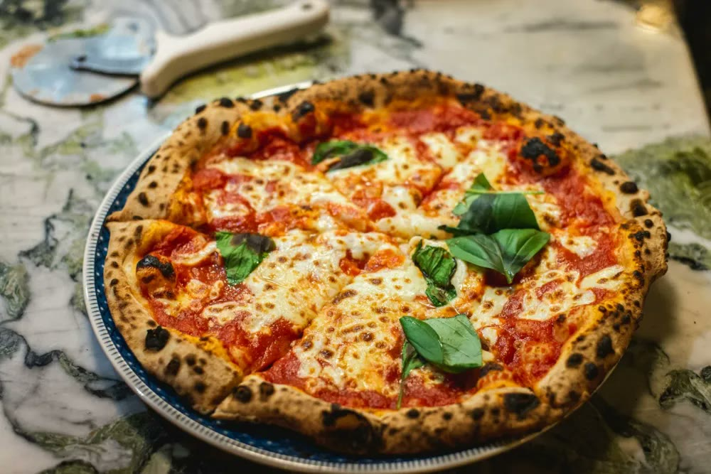
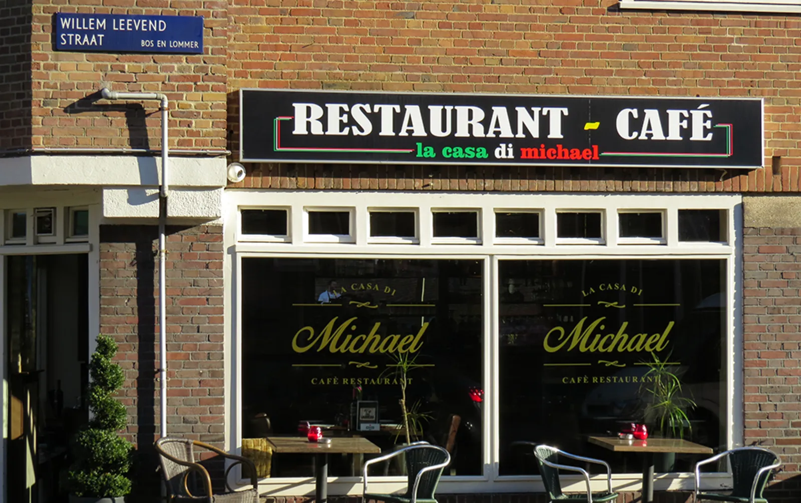
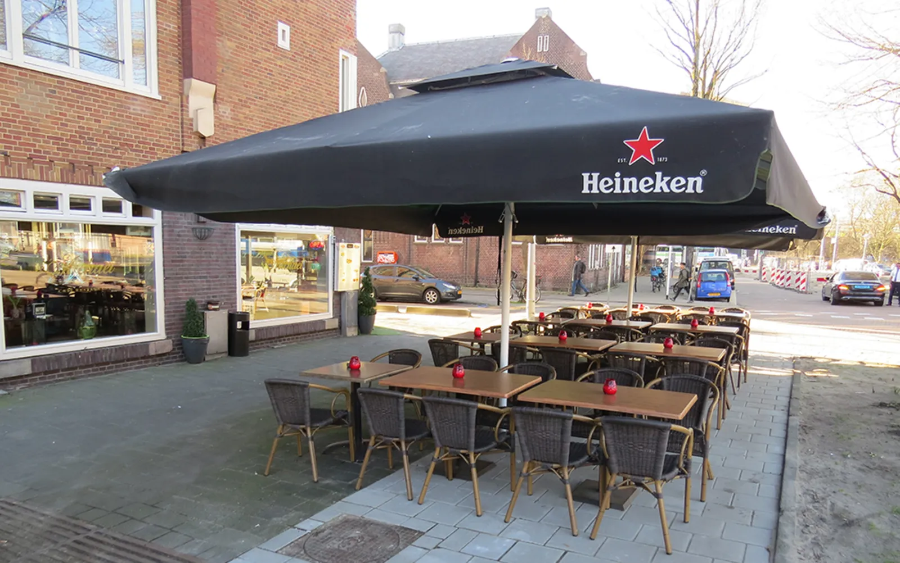
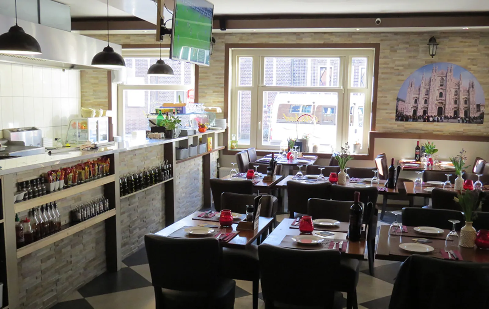

Café-restaurant · Bos en Lommer, Amsterdam
La Casa di Michael
Tutte le strade portano a La Casa di Michael
Italië is dichterbij dan je denkt. Proef de echte Italiaanse keuken in een mediterrane, levendige sfeer, van pizza en pasta tot vlees en vis van de grill.
Een grote keuze aan authentieke Italiaanse specialiteiten, en natuurlijk ook de traditionele pizza’s en pasta’s.
Het zonnige, zuidelijke interieur en de vriendelijke bediening zorgen voor een geslaagde Italiaanse avond. De Italiaanse keuken met haar zon, cultuur en culinaire rijkdom: bij La Casa di Michael zijn alle ingrediënten aanwezig.



Ons restaurant in Bos en Lommer
Is het Nederlandse weer in een Italiaanse bui? Dan geniet je net zo goed buiten, op ons terras.
La Casa di Michael ligt aan de Admiraal de Ruijterweg en is makkelijk te bereiken met de auto en het openbaar vervoer.
Reserveer een tafel

Reserveer een tafel
Benieuwd geworden? Boek nu een tafel in Bos en Lommer. We hopen je te verwelkomen bij La Casa di Michael!
Liever bellen? 020 363 6813
Of reserveer via TheFork.
Contact
Vragen, opmerkingen of suggesties? Laat het ons weten.
La Casa di MichaelAdmiraal de Ruijterweg 535
1055 MK Amsterdam